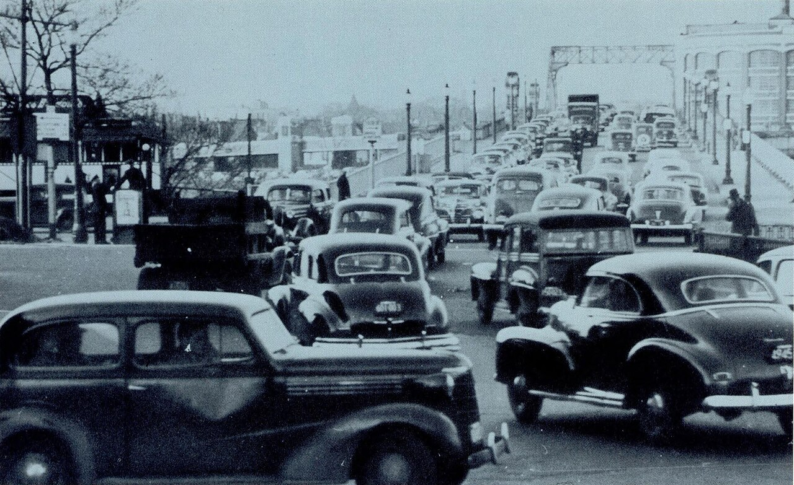

Part III · Traffic engineering · Module 7
Traffic flow, congestion and shockwaves
Most drivers have sat in a queue that seemed to have no cause. This module explains where queues come from, why they grow backwards, and why they last longer than whatever started them. It shows why many bottlenecks carry less traffic once a queue has formed, and why a lane added just upstream of a bottleneck does nothing. It then moves from one road to a whole city center, where Zurich has held cars at its edge since 2007. It ends with what all this means for the welfare function: delay belongs in Term A, and the delay one driver imposes on others sets the right congestion charge.
- The question
- Why do queues form, why do they last so long, and what can a city do about them without building road space that fills up again?
- What matters
- A road carries the most traffic at a medium density. Beyond that point, more cars on the road means fewer cars getting through. Every road delivers no more than its tightest point, the bottleneck, lets through. Once a queue forms there, many bottlenecks let through a few percent less than before. A whole city center behaves the same way.
- Numbers to question
- The capacity a study assumes per lane; whether its model lets queues grow backwards and lets capacity drop; travel-time savings from widening a road upstream of a bottleneck that stays as it is; and the value of an hour that turns delay into money (Module 2).
- Levers
- Ramp meters, signals that hold traffic at a city's edge, and variable speed limits work within months and keep bottlenecks from breaking down. Congestion charges (Module 13) keep demand below the breaking point. Fixing the bottleneck itself helps until traffic grows into the new space (Module 5). Adding lanes anywhere else does not help.
- Ask your analysts
- Where is the bottleneck, and does the project change its capacity? Does the model let queues spill back to junctions upstream? Is each hour of delay counted once? Does traffic in the forecast respond to the new capacity?
- Describe traffic with flow, density and speed, and explain why one flow can mean free traffic or a jam.
- Explain capacity, the fundamental diagram and why the tail of a queue moves upstream; compute the speed of a queue tail.
- Read cumulative curves and compute the total delay of a queue.
- Explain capacity drop, why a lane added upstream of a bottleneck does not reduce delay, and why ramp metering can raise throughput.
- Explain stop-and-go waves without a bottleneck, using the 2008 ring-road experiment.
- Explain the macroscopic fundamental diagram and perimeter control, using Zurich as the example.
- Place congestion correctly in \(W\): delay in Term A, and the delay imposed on others as the basis of the congestion charge.
- Under the hood: state the kinematic-wave model, the Intelligent Driver Model, Gipps' model, MOBIL and the cell transmission model, and summarize the three-phase debate.
1. A jam with no cause
In 2008 a team of Japanese physicists led by Yuki Sugiyama of Nagoya University published an unusual experiment. They placed 22 cars on a circular track 230 meters around. The drivers were asked to cruise at about 30 km/h and to follow the car ahead safely. Nothing else.
At first the cars moved evenly around the circle. Then small differences in spacing appeared. They grew as they passed from car to car. After a few minutes several cars had to stop completely for a moment. A small jam of about five cars had formed. It moved backwards around the circle at roughly 20 km/h, about the speed at which jams travel on real motorways. Cars left its front and joined its back, so the jam kept its size while every car kept moving forwards.
There was no lane drop, no junction and no crash. The authors concluded that "a bottleneck is only a trigger and not the essential origin of a traffic jam."
Source: Y. Sugiyama et al., "Traffic jams without bottlenecks: experimental evidence for the physical mechanism of the formation of a jam", New Journal of Physics 10 (2008), open access. Try it yourself on Martin Treiber's ring-road simulation.
The experiment is extreme on purpose. On real roads most queues do start at a bottleneck: a place where the road can carry less traffic than just before it, such as a lane drop, a merge, a steep grade or a junction. But the circle shows what traffic is made of. Each driver reacts to the driver ahead, a little late and a little too strongly. When cars are close together, that reaction turns a small disturbance into a wave.
Two lessons run through this module. First, a queue is a physical object. It has a length, a density, and a tail that moves at a speed we can predict. Second, the place where drivers feel a delay is often far from its cause, both in space and in time. A decision maker who wants to cure a queue has to find its cause first.

2. Three numbers that describe traffic
Engineers describe the traffic on a stretch of road with three numbers:
- Flow \(q\): the number of vehicles passing a point per hour. A roadside counter measures it.
- Density \(k\): the number of vehicles on one kilometer of road at one instant. An aerial photo shows it.
- Speed \(v\): the average speed of the vehicles on that kilometer.
The three are linked by one identity:
$$q = k\,v .$$Take 20 vehicles per kilometer, moving at 100 km/h. Each hour, 20 × 100 = 2,000 vehicles pass a point. Now take 100 vehicles per kilometer, crawling at 20 km/h. Again 2,000 vehicles pass each hour. The flow is the same, but the first road is free and the second is jammed.
This is the most important point of this section. A count alone does not say whether a road is congested. A traffic study that reports only volumes cannot tell a smooth road from a queue.
Under the hoodMeasuring flow, density and speed, and two common errors
The speed in \(q=kv\) must be the space-mean speed: the average over the vehicles on a stretch at one instant. At a single detector it equals the harmonic mean of the spot speeds. The arithmetic average of spot speeds, called the time-mean speed, is always at least as large, because fast vehicles pass a detector more often per unit of time. Many loop detectors report time-mean speeds. Using them in \(q=kv\) overestimates speed and underestimates density, and the error is large in congested traffic.
Single loops also do not measure density. They measure occupancy, the share of time the detector is covered by a vehicle. Density is then estimated as occupancy divided by an assumed effective vehicle length. With a mix of cars and trucks, that assumed length is a significant source of error.
At the level of single vehicles, the matching quantities are the time headway \(h\) (seconds between successive vehicles passing a point, so \(q = 1/\bar h\)) and the spacing \(s\) (meters from front to front, so \(k = 1/\bar s\)).
3. The fundamental diagram: how much a road can carry
Put a detector on one motorway lane. Record flow and density every few minutes for a month. Then plot each pair as a point, with density across and flow up. The points form a hump. Engineers call this curve the fundamental diagram.
Read it from left to right:
- Few cars. Drivers travel at their desired speed, the free-flow speed. Each extra car adds to the flow.
- The top of the hump. At a certain density, the critical density, flow reaches its maximum. This maximum is the road's capacity. A motorway lane typically carries around 1,800 to 2,200 vehicles per hour at capacity.
- More cars. Drivers are now so close that they slow down. They slow down faster than density rises, so flow falls.
- Jam density. Cars stand nearly bumper to bumper, and flow is zero.
Two facts follow that matter for every planning decision. First, every flow below capacity can occur in two states: free (few cars, fast) and congested (many cars, slow). Second, capacity is a maximum, not a target. On the right side of the hump, more cars on the road means fewer cars getting through.
The idea is old. Bruce Greenshields fitted the first such relation to observed traffic in 1935, assuming that speed falls in a straight line as density rises. Later work by Gordon Newell and Carlos Daganzo simplified the hump to a triangle. Its left side is a straight line at the free-flow speed. Its right side is another straight line, whose slope says that disturbances in a queue travel backwards at a nearly constant speed, typically 15 to 20 km/h. That is the speed of the jam on Sugiyama's circle.
The diagram has limits. It counts vehicles, not people: a bus with 60 riders counts as one large vehicle. It describes a uniform road; on city streets the junctions decide how much gets through, and the relevant number is the flow a signal can discharge per hour of green (Module 9). And it serves no objective by itself. It is physics. Module 8 shows how it became the basis of a grading system that did serve one: the motorist's delay (Module 8).
Under the hoodShapes of the fundamental diagram
Write \(v_f\) for the free-flow speed, \(q_{\max}\) for capacity, \(k_c\) for critical density and \(k_j\) for jam density.
| Model | Form | Comment |
|---|---|---|
| Greenshields (1935) | \(v = v_f(1-k/k_j)\), so \(Q(k)=v_f k(1-k/k_j)\) | A parabola. Historically important, but speed falls too early: real speeds stay near \(v_f\) up to quite high flows. |
| Triangular (Newell; Daganzo) | \(Q(k)=\min\{v_f k,\; w\,(k_j-k)\}\) | Two straight branches. Free-flow waves travel downstream at \(v_f\); congested waves travel upstream at the constant speed \(w\). The workhorse of modern theory. |
| With capacity drop | Queue discharge \(q_{\text{dis}}<q_{\max}\) | The free-flow branch reaches a higher maximum than the flow discharged once a queue has formed (section 6). |
The congested-wave speed of the triangle follows from its corners: \(w = q_{\max}/(k_j - k_c)\). With 2,000 veh/h, 150 veh/km and 20 veh/km per lane, \(w = 2000/130 \approx 15.4\) km/h.
4. Why queues grow backwards
Picture the tail of a queue upstream of a lane closure. Cars arrive at the tail from upstream. Cars leave at the front, at the rate the closure lets through. If more cars arrive than leave, the queue gains cars and its tail moves upstream, towards the arriving traffic. Every car in it still moves forwards, slowly.
How fast does the tail move? It depends on two numbers. The first is how many more cars arrive per hour than leave. The second is how many more cars per kilometer the queue packs than the free traffic arriving at it. Divide the first by the second, and you get the speed of the tail in kilometers per hour. Engineers call such a moving boundary between two traffic states a shockwave. For an upstream state 1 and a downstream state 2:
$$w_{12} = \frac{q_2 - q_1}{k_2 - k_1}.$$A negative result means the boundary moves upstream.
The theory came from rivers. In 1955 the British applied mathematicians James Lighthill and Gerald Whitham published two papers on "kinematic waves". The first was about flood waves in long rivers. The second applied the same mathematics to "long crowded roads". The American Paul Richards found the same result independently in 1956. Engineers call it the LWR model, after the three of them. By December 1959 the new field was large enough for General Motors' research laboratories in Warren, Michigan, to host the first international symposium on the theory of traffic flow.
Road works close one lane of a three-lane motorway. The remaining two lanes form a bottleneck with a capacity of 4,000 vehicles per hour. Upstream demand is 5,000 vehicles per hour for 45 minutes, then falls to 3,000. Each lane follows a triangular diagram with a free-flow speed of 100 km/h, a capacity of 2,000 vehicles per hour and a jam density of 150 vehicles per km.
- Arriving traffic (three lanes, free): 5,000 veh/h at 100 km/h, so the density is 5000/100 = 50 veh/km.
- The queue (three lanes, congested, discharging 4,000 veh/h): the congested branch of the diagram gives a density of about 190 veh/km. The speed in the queue is 4000/190 ≈ 21 km/h.
- The tail: \(w = (4000-5000)/(190-50) \approx -7.1\) km/h. The tail moves upstream at about 7 km/h. After 45 minutes the queue is \(0.75\times7.1\approx5.4\) km long.
- After demand falls (3,000 veh/h at 30 veh/km): \(w=(4000-3000)/(190-30)\approx+6.3\) km/h. The tail now moves downstream and reaches the closure after \(5.4/6.3\approx0.86\) h, about 51 minutes. The queue exists for about 96 minutes in total.
Now look at what a detector 3 km upstream of the closure sees. It sees free traffic at 100 km/h until the tail passes it, about 25 minutes after the queue began. Then it sees 21 km/h. Later it sees free traffic again when the tail recedes past it. The slowdown arrives at the detector long after its cause began, and it lasts far shorter than the queue does. Detector data are samples of a moving object.
Under the hoodThe LWR model, the shockwave formula and Newell's shortcut
Vehicles are neither created nor destroyed on a road without entrances or exits. On a short stretch, density rises exactly as fast as more vehicles flow in at one end than out at the other. In the limit this gives the conservation law
$$\frac{\partial k}{\partial t} + \frac{\partial q}{\partial x} = 0 .$$Lighthill, Whitham and Richards closed it by assuming that flow is always in equilibrium with density, \(q=Q(k)\), the fundamental diagram. The result is a first-order hyperbolic conservation law. Small changes in density travel as kinematic waves at the speed \(Q'(k)\), the slope of the diagram. On the free-flow branch the slope is positive, so waves move downstream. On the congested branch it is negative, so waves move upstream.
Where two states meet, conservation across the moving boundary gives the shockwave speed \(w_{12} = (q_2 - q_1)/(k_2 - k_1)\). On the fundamental diagram it is the slope of the straight line joining the two states.
In the worked example, three lanes have a jam density of 450 veh/km and a congested-wave speed of 15.4 km/h, so the congested branch is \(q = 15.4\,(450-k)\). Setting \(q=4000\) gives \(k_Q = 450-4000/15.4 \approx 190\) veh/km.
Gordon Newell (1993) showed that with a triangular diagram the whole LWR solution can be computed from cumulative vehicle counts at the boundaries of a road section. That result is the theoretical basis of the cumulative curves in the next section.
5. Counting the delay: cumulative curves
How much time does the queue cost? A simple picture answers this. Imagine two counters. The first counts the cars that would reach the closure if there were no queue. The second counts the cars that actually pass the closure. Plot both running totals against the clock. Engineers call these lines cumulative curves or N-curves.
- The vertical gap between the two lines is the number of cars waiting in the queue.
- The horizontal gap is the delay of one car, if cars leave in the order they arrived.
- The area between the lines is the total delay of all cars.
In the example, for 45 minutes, 5,000 cars arrive per hour but only 4,000 leave. So the queue holds \((5000-4000)\times0.75=750\) extra cars when demand falls. Then 3,000 arrive and 4,000 leave per hour, so the queue shrinks by 1,000 per hour and is gone 45 minutes later. The area between the curves is a triangle:
$$\text{total delay} = \tfrac12 \times 750\ \text{vehicles}\times 1.5\ \text{h} \approx 560\ \text{vehicle-hours}.$$This simple model treats the queue as if it sat at a single point, and says the queue lasts 90 minutes. The shockwave calculation said 96. The difference arises because the drop in demand reaches the closure at once in the point model, but reaches the tail of the real queue, 5.4 km upstream, first. Differences of this kind between "point queues" and physical queues are exactly what Japan's verification protocol asks every simulation model to demonstrate (Module 10).
At €15 per vehicle-hour, the closure costs about €8,400 in lost time. All of it appears in Term A, because Term A is computed from everyone's travel times as they actually are, queue included (Module 1, "Where is congestion?").
The curves also show who causes the delay. Take one car arriving just as the queue starts. About 6,000 cars pass the closure before the queue clears, and the extra car delays each of them by the time it takes to pass, \(1/4000\) of an hour, about 0.9 seconds. Its delay to others is therefore \(6000/4000=1.5\) vehicle-hours, the remaining life of the queue. At €15 per hour that is about €22. This delay is already inside the 560 vehicle-hours in Term A. It is not a further loss. It is the basis of the right congestion charge for that car at that moment (section 9, Module 13).
6. Bottlenecks: capacity drop, the useless extra lane, and metering
A bottleneck is any place where capacity falls: a lane drop, an on-ramp merge, a section where cars must change lanes across each other, an uphill grade or a dip, a tunnel entrance, a work zone, a signalized junction. Three facts about bottlenecks matter more for decisions than anything else in this module.
A road delivers what its bottleneck lets through
Go back to the lane closure and add a fourth lane upstream of it, all the way back. Does that help? The closure still lets through 4,000 cars per hour. The same cars arrive at the same times, and they pass the closure at the same rate. So the two cumulative curves do not change, and neither does the area between them. Total delay stays at about 560 vehicle-hours.
What does change is the shape of the queue. Four lanes store more cars per kilometer than three, so the queue is shorter: its tail moves upstream at about 3.4 km/h instead of 7.1, and after 45 minutes it is about 2.6 km long instead of 5.4. The jam looks smaller on a traffic map. No driver arrives earlier. And the wider queue must now squeeze from four lanes into two at the closure, which can make the merge worse.
The same holds for any widening upstream of a bridge, a tunnel or a busy junction that stays as it is. It moves the queue. It does not remove the delay. Widening the bottleneck itself does help, until demand grows into the new space (Module 5) or the queue moves to the next bottleneck downstream.
Capacity drops once a queue forms
Careful observations at freeway bottlenecks, for example by Michael Cassidy and Robert Bertini (1999), found that the flow leaving a queue is lower than the highest flows seen just before the queue formed. Reported drops range from a few percent to about 15–20%, varying by site. A common explanation is that drivers accelerating out of a queue leave longer gaps than drivers who were cruising before it formed. This capacity drop makes a breakdown expensive.
In the worked example, suppose the closure discharges 10% less once the queue forms: 3,600 instead of 4,000 cars per hour. The queue then gains 1,400 cars per hour instead of 1,000, and holds 1,050 cars when demand falls. Afterwards it shrinks by only 600 per hour, so it lasts another 1.75 hours instead of 45 minutes. Total delay rises from about 560 to about \(\tfrac12\times1050\times2.5\approx1{,}300\) vehicle-hours. A 10% loss of capacity more than doubles the delay.
Breakdown is also a matter of chance. The same flow can run smoothly on one day and break down on the next. German researchers, notably Werner Brilon and colleagues at Bochum, therefore treat capacity as a random number with a probability distribution rather than a fixed value. German capacity practice builds on this idea (Module 8).
Keeping a bottleneck just below breakdown
If a breakdown costs capacity, preventing it gains capacity. This is the physical case for ramp meters: traffic signals on motorway on-ramps that release cars one or two at a time, so that the merge stays just below breakdown. Variable speed limits that smooth traffic approaching a bottleneck follow the same logic. Few active traffic controls have so solid a physical basis.
Minnesota's transport department first tested ramp meters in 1969. By 2000 about 430 of them managed the freeways of Minneapolis–Saint Paul, and some members of the public had begun to question whether the waits at the ramps were worth it. The state legislature responded with an unusual law: switch the meters off and measure what happens. In the autumn of 2000, the department measured traffic for several weeks with meters on, then for several weeks with all of them dark.
Without meters, the waits at the ramps disappeared. But freeway travel times on the test corridors rose by 22%, freeway throughput in peak conditions fell by 14%, travel times became far less predictable, and peak-period crashes on the previously metered freeways and ramps rose by 26%, after adjusting for the season. The consultants estimated the meters' net benefit at $32–37 million a year. They also found one cost: with meters, cars burned more fuel, about 5.5 million gallons a year. The meters came back, and many travelers asked for shorter waits at the ramps.
Source: Cambridge Systematics, Twin Cities Ramp Meter Evaluation, final report, chapter 9 (Minnesota Department of Transportation, February 2001); background in chapter 1.
Metering moves the queue from the motorway, where it blocks everyone, to the ramps, where it blocks only those entering. That is its strength and its political weakness. The people who wait at the ramp are visible and local. The people who gain on the motorway are many and diffuse. Metering also does not reduce demand. If more people want to drive than the bottleneck can carry, the queue has to be somewhere. Only pricing, other modes or other destinations change that (Module 13).
7. Stop-and-go waves and the drivers who make them
Return to Sugiyama's circle. Why did a small disturbance grow? Each driver reacts to the car ahead with a delay of about a second, and tends to brake a little harder than the car ahead did. When cars are far apart, the extra braking dies out along the line. When they are close, it grows from driver to driver. Engineers call a line of vehicles string unstable when a small speed change by one driver grows as it passes back through the line. On motorways, string instability produces stop-and-go waves that travel upstream at roughly 15–20 km/h, often long after and far from any bottleneck.
The rules by which simulated drivers follow each other are called car-following models. Every microscopic simulator, which moves each vehicle separately, contains one (Module 10). The two most important parameters are easy to state in words. The first is the time gap a driver keeps to the car ahead. The second is how hard drivers accelerate and brake. Short gaps raise capacity: halving the time gap almost doubles the flow a lane can carry. Short gaps combined with gentle acceleration make waves more likely.
Two practical lessons follow. First, a simulator calibrated only to match counts can still be wrong about waves, and therefore about how reliable travel times are. Reliability has a value of its own (Module 2). Second, string stability is now a design requirement for adaptive cruise control and automated vehicles. The same equations decide whether a fleet of automated cars damps waves or amplifies them.
Under the hoodCar-following and lane-changing models: IDM, Gipps, MOBIL
The Intelligent Driver Model (IDM)
Martin Treiber, Ansgar Hennecke and Dirk Helbing (2000) proposed an acceleration rule that is smooth, free of collisions and has parameters with a plain meaning:
$$\dot v = a\left[1-\left(\frac{v}{v_0}\right)^{\delta}-\left(\frac{s^*(v,\Delta v)}{s}\right)^2\right],\qquad s^*(v,\Delta v)= s_0 + vT + \frac{v\,\Delta v}{2\sqrt{ab}} .$$Here \(v_0\) is the desired speed, \(T\) the desired time gap, \(s_0\) the minimum gap at standstill, \(a\) the maximum acceleration, \(b\) the comfortable deceleration, \(\delta\) an exponent (usually 4), \(s\) the actual gap and \(\Delta v\) the speed at which the driver approaches the leader. Typical motorway values are \(v_0=120\) km/h, \(T=1.5\) s, \(s_0=2\) m, \(a=1\) m/s² and \(b=1.5\) m/s². In equilibrium (\(\dot v=0\), \(\Delta v=0\)) the IDM implies a fundamental diagram. Its capacity depends mainly on \(T\) and vehicle length, which is why time gaps are the first parameter to calibrate when a simulator's bottleneck capacity is wrong. Its stability depends on \(a\), \(b\) and \(T\).
Gipps' model
Peter Gipps (1981) chooses the speed for the next reaction-time step \(\tau\) as the smaller of two speeds: a free-acceleration speed, and the largest speed from which the driver could still stop safely if the leader braked hard:
$$v_n(t+\tau)=\min\Big\{v_n+2.5a_n\tau\big(1-\tfrac{v_n}{V_n}\big)\sqrt{0.025+\tfrac{v_n}{V_n}},\;\; b_n\tau+\sqrt{b_n^2\tau^2-b_n\big[2(x_{n-1}-S_{n-1}-x_n)-v_n\tau-\tfrac{v_{n-1}^2}{\hat b}\big]}\Big\}$$with \(b_n<0\) the driver's maximum deceleration, \(\hat b\) the driver's estimate of the leader's, \(V_n\) the desired speed and \(S_{n-1}\) the leader's effective length. Safe-speed logic of this kind underlies several commercial simulators. The default car-following model of the open-source simulator SUMO is a Krauss model, a stochastic relative of the same idea.
Lane changing: MOBIL
Arne Kesting, Martin Treiber and Dirk Helbing (2007) proposed MOBIL ("minimizing overall braking induced by lane changes"). A driver \(c\) changes lane if the change is safe for the new follower \(n\), meaning \(\tilde a_n \ge -b_{\text{safe}}\), and if it is worth it after counting part of the disadvantage it causes others:
$$\tilde a_c - a_c + p\,\big[(\tilde a_n - a_n) + (\tilde a_o - a_o)\big] > \Delta a_{\text{th}} .$$Tildes mark accelerations after the change, \(o\) is the old follower, \(p\in[0,1]\) a politeness factor and \(\Delta a_{\text{th}}\) a threshold that prevents constant switching. With \(p=0\) drivers are selfish. With \(p=1\) a driver changes lane only if total acceleration in the neighborhood rises. MOBIL is a small behavioral model with its own small welfare function: a "polite" population takes part of its effect on others into account.
8. Whole cities: the macroscopic fundamental diagram and Zurich
A single road has a capacity. Does a whole city center? In 2007 Carlos Daganzo at Berkeley argued that a neighborhood behaves like a bathtub. Cars flow in, and trips end at a rate that depends on how many cars are inside. In 2008 Nikolas Geroliminis and Daganzo tested the idea with loop detectors and taxi GPS data from Yokohama in Japan. They found a clear relation between the average density of cars in the network and the rate at which the network moved them. They called it the macroscopic fundamental diagram (MFD).
Like the diagram for one lane, it rises to a maximum and then falls. Past a critical number of cars, adding more makes the whole network finish fewer trips per hour. The reason is spillback: queues from one junction reach back into the junction behind, and block traffic that wanted to go elsewhere. At the extreme this is gridlock.
The MFD justifies perimeter control, also called gating. Signals at the edge of a protected area hold cars back when the area is near its critical point. Queues form at the edge, where they block only the cars entering, instead of inside, where they block everyone.
Zurich built such a system before the theory existed. Since 2007 the city has monitored the flow on about 23 roads in a city center of roughly 2.6 square kilometers. When the center fills up, signals on the main roads leading in, some of them more than 5 km away, shorten their green times by about 5–20%. A second layer, close to or inside the center, cuts green times by a third or by half once flows inside reach about 95% of their expected maximum. Trams and buses get priority at the city's signals. A 2018 study by Lukas Ambühl, Allister Loder, Monica Menendez and Kay Axhausen at ETH Zurich used the MFD to evaluate the system with data from loop detectors across the city, and found that it performs well. The authors note that the city "planned and implemented the current system before the concept of the MFD was even formulated."
In welfare terms, gating rations a scarce resource, space in the center, by waiting time at the edge. A congestion charge rations it by price (Module 13). Waiting is a pure loss, while a charge is a transfer that returns as public revenue, so pricing can do the same job at lower cost. Gating, though, needs no new law and works within months. The MFD also has limits. It is well-defined only when congestion is spread fairly evenly across the area. It traces different paths while congestion builds up and while it clears. And like every diagram in this module, it counts vehicles, not people.
Under the hoodThe cell transmission model
Carlos Daganzo (1994) turned the LWR model into a computer recipe, the cell transmission model (CTM). The road is cut into cells of length \(v_f\Delta t\), the distance a free car travels in one time step. In each step, the number of vehicles moving from cell \(i\) to cell \(i+1\) is the smallest of three numbers: what cell \(i\) can send, what the road can carry, and what cell \(i+1\) can receive:
$$y_i = \min\big\{\,v_f k_i\,,\; q_{\max}\,,\; w\,(k_j - k_{i+1})\,\big\}\Delta t .$$This "sending and receiving" principle extends naturally to merges and diverges. It underlies many mesoscopic simulators and dynamic traffic assignment (Module 4). It reproduces queues, spillback and shockwaves at a fraction of the computing cost of microsimulation. Without extensions it reproduces neither stop-and-go waves nor capacity drop. Network versions of the CTM are a common way to design perimeter controllers; Mehdi Keyvan-Ekbatani and colleagues (2012) designed a simple feedback gating controller from the MFD.
9. What congestion costs, and where it is counted
Module 1 settled where congestion belongs in the welfare function. Here is the short version, with the physics of this module added.
Term A is computed from the travel times that people actually experience, with all the traffic on the road. A queue therefore lowers Term A by the full delay of everyone in it, including the delay that each driver imposes on the others. That delay must not be subtracted a second time in Term C. Only if a model holds travel times fixed must the delay to others be added separately, and never both.
The delay a driver imposes on others still matters, for a different reason. Let \(t(q)\) be the average travel time on a link with flow \(q\). Total travel time is \(q\,t(q)\). One more vehicle adds
$$\frac{d\,[q\,t(q)]}{dq} = \underbrace{t(q)}_{\text{felt by the new driver}} + \underbrace{q\,t'(q)}_{\text{imposed on everyone else}} .$$The new driver weighs only the first part. The second part, the external congestion cost, is ignored. That is why too many people drive at the peak, and it sets the right congestion charge: a charge equal to the money value of \(q\,t'(q)\) makes each driver weigh it (Module 13).
With the US Bureau of Public Roads link function, \(t=t_0[1+0.15(q/C)^4]\), where \(t_0\) is the free-flow time and \(C\) the capacity, the delay to others is \(q\,t'(q)=0.6\,t_0(q/C)^4\). At half capacity it is about 4% of the free-flow time. At 90% of capacity it is about 39%. At a bottleneck with a queue, section 5 showed it equals the remaining life of the queue, often far more than the new driver's own delay. Module 1 plots this curve.
Two conclusions follow.
- Time is lost in queues. Almost all of the delay drivers impose on each other arises in a few hours at a few bottlenecks and junctions. Away from capacity, \(t'(q)\approx0\). A citywide average "congestion index" hides this concentration.
- Delay removed is not the same as welfare gained. Adding capacity at a bottleneck removes the queue only if demand stays fixed. If new trips come, traffic again settles on the steep part of \(t(q)\). The gain in Term A is then the value of the extra trips, not the vanished delay. A congestion charge removes the excess by deterring the trips worth less than the delay they impose, without taking land (Term D) or public money (Term E).
The classic engineering objective, to minimize total vehicle-hours \(\sum_a q_a t_a\) on all links \(a\), counts every driver's delay, including the delay each imposes on the others. It is the time part of Term A when demand is held fixed. It leaves out every other term, and it assumes that no one changes their trip when the network changes. The physics of this module tells you where the queues are. Only the demand models of Module 4 tell you what happens when you remove them.
Higher speeds after a queue is removed raise crash severity and noise, and above roughly 70–90 km/h they raise fuel use per kilometer for cars. A traffic-flow model sees the time saving, not these costs in Term C. Nor does it see the pedestrian who must now cross a wider, faster road. Report these alongside any delay result.
10. Where the models fail, and what other traditions do
Everything above comes from one tradition: the kinematic-wave theory of Lighthill, Whitham and Richards, refined mainly in the United States, the Netherlands and Germany. It assumes that traffic flows in lanes, that drivers are broadly alike, and that speed settles to a value set by density. Each assumption fails somewhere, and other traditions have responded differently.
- Germany: capacity as chance. Rather than one capacity per road, German research treats breakdown as a probability that rises with flow (section 6). Its practical lesson: design and operate for a low risk of breakdown, not for the maximum flow ever observed.
- Japan: test the simulator, not just the road. The Japan Society of Traffic Engineers asks every traffic simulator to show that it reproduces a short list of basic phenomena before it is used in practice (box below and Module 10).
- India and Southeast Asia: traffic without lanes. Where motorcycles, auto-rickshaws, cars, buses and bicycles share the road without lane discipline, a model of one car following one leader does not fit. Indian researchers have developed passenger-car-unit factors that change with traffic conditions (the Indian Highway Capacity Manual, Indo-HCM, published by CSIR-CRRI in 2017) and "area-based" models in which each vehicle chooses a sideways position and a gap in two dimensions (for example Sarkar, Bhaskar, Zheng and Miska, 2020). The problem is not only Asian: cyclists filtering past queues, e-scooters and delivery vehicles in European cities pose the same difficulty. A lane-based model misplaces their delay and their exposure to conflicts.
- A rival theory. Boris Kerner, working largely from German motorway data, argues that traffic has three phases rather than two. The debate is technical and unresolved (box below). Its practical lesson is modest but real: heavy but moving traffic and a full breakdown are different states, and a model that confuses them misestimates delay.
渋滞の延伸と解消 停止波と発進波の伝播
"Growth and dissolution of congestion: propagation of stopping waves and starting waves." This is test 3 of the six basic verification tests of the Japan Society of Traffic Engineers (JSTE) for traffic simulation models. Tests 2 and 4 cover bottleneck capacity and saturation flow, and merge and diverge capacity. Source: JSTE Traffic Simulation Clearinghouse, verification results page (archived January 2025). Translated by the course authors (machine-assisted). The full list is in Module 10.
Under the hoodKerner's three-phase theory and the reply
Boris Kerner distinguishes free flow (F), synchronized flow (S: congested but moving, with similar speeds across lanes) and wide moving jams (J). In his account, breakdown is a transition from F to S that can occur over a range of flows, and synchronized flow covers a two-dimensional region of the flow–density plane rather than a curve. Kerner and his followers argue that models built on a fundamental diagram cannot reproduce these features.
Martin Treiber, Arne Kesting and Dirk Helbing (2010) replied that two-phase models with a fundamental diagram, plus randomness or differences between drivers, reproduce the same observed regularities. The debate is unresolved and partly about definitions. Chinese researchers have recently applied three-phase concepts to expressway data (for example Chen et al., 2024).
A two-lane urban motorway (per-lane triangular diagram: free-flow speed 90 km/h, capacity 1,900 veh/h, jam density 140 veh/km) has an on-ramp. Downstream of the merge, capacity is 3,800 veh/h. Mainline demand is 3,200 veh/h and ramp demand 900 veh/h from 07:15 to 08:00, then 2,600 and 500.
- Find the queue state, the speed of the queue tail and the maximum queue length (ignore how the queue splits between ramp and mainline).
- Draw cumulative curves and compute total delay. Repeat with a 10% capacity drop.
- Build the corridor on traffic-simulation.de (on-ramp scenario) or in SUMO. Does the simulated queue tail move at the speed you predicted? If not, which IDM parameter would you change?
- Compute the delay one extra ramp vehicle entering at 07:30 imposes on others. What congestion charge (at €15/h) would make the driver weigh it? Explain why this delay must not be added to the total delay you computed in step 2.
A city plans to widen a 1.5 km approach road from two to three lanes. The approach ends at a two-lane bridge that will not change. The consultant's report shows the evening queue on the approach shrinking from 1.4 km to 0.9 km.
- Using cumulative curves, explain what happens to total delay. Under what conditions could delay rise?
- Which three questions would you put to the consultant before the council votes?
- Name two alternatives that act on the bottleneck or on demand, and the terms of \(W\) each would affect.
Using the IDM equilibrium (\(\Delta v=0\), \(\dot v=0\)), derive the steady-state gap \(s_e(v)\) and plot \(q(k)\) for \(T=1.0\), 1.5 and 2.0 s, with vehicle length 5 m and \(s_0=2\) m. Read off capacity for each. A city wants to reduce motorway speed limits from 120 to 100 km/h. Using your plots, discuss whether capacity changes much, and list which terms of \(W\) the speed change affects besides travel time.
Readings and resources
- TU Delft OCW — Traffic Flow Theory and Simulation (Hoogendoorn, Knoop) Free lectures, slides and exercises: arrival patterns and cumulative curves, fundamental diagram, shockwave theory, moving bottlenecks, MFD, car-following and lateral behavior. The best single companion to this module.
- TU Delft OCW — Lecture 4: Shockwave theory Graphical construction of shockwaves on the fundamental diagram, with worked examples.
- Martin Treiber (TU Dresden) — Traffic Flow Dynamics and Simulation, lecture slides and tutorials Full master's course: data, macroscopic and microscopic models, IDM, lane changing, stability. Exercises with solutions.
- Martin Treiber — lecture and tutorial video channel (YouTube) Recorded lectures accompanying the course above.
- traffic-simulation.de — interactive microsimulation (IDM + MOBIL) Change time gap, acceleration and politeness live and watch waves and bottlenecks form. Ideal for building intuition before using SUMO.
- Treiber & Kesting — Traffic Flow Dynamics: Data, Models and Simulation (Springer; 2nd ed. 2025), book website The standard graduate textbook. The website has samples and simulations; the book itself is paid.
- Tom V. Mathew (IIT Bombay) — Transportation Systems Engineering lecture notes Free written notes with numerical examples: fundamental relations, stream models, car-following, lane changing, cell transmission models.
- Sugiyama et al. (2008) — Traffic jams without bottlenecks: experimental evidence The ring-road experiment: string instability in real drivers. Open access, with videos.
- Lighthill & Whitham (1955) — On kinematic waves II: a theory of traffic flow on long crowded roads The founding paper of LWR theory. Part I, on flood waves in rivers, is here. Read with Richards (1956), Shock waves on the highway.
- Newell (1993) — A simplified theory of kinematic waves in highway traffic Why cumulative curves and a triangular diagram are enough.
- Cassidy & Bertini (1999) — Some traffic features at freeway bottlenecks Careful empirical evidence on bottleneck discharge and capacity drop using cumulative curves.
- Cambridge Systematics (2001) — Twin Cities Ramp Meter Evaluation, final report, chapter 9 The meters-off experiment: travel time, throughput, reliability, crashes, fuel and the cost–benefit result.
- Daganzo (2007) — Urban gridlock: macroscopic modeling and mitigation approaches and Geroliminis & Daganzo (2008) — Existence of urban-scale macroscopic fundamental diagrams The MFD and its empirical confirmation in Yokohama.
- Ambühl, Loder, Menendez & Axhausen (2018) — A case study of Zurich's two-layered perimeter control How Zurich's gating works and how the MFD shows its effect. Open access (Transport Research Arena 2018).
- Keyvan-Ekbatani et al. (2012) — Exploiting the fundamental diagram of urban networks for feedback-based gating A simple perimeter controller derived from the MFD.
- Daganzo (1994) — The cell transmission model The discretization used in most mesoscopic models and dynamic traffic assignment.
- Treiber, Hennecke & Helbing (2000) — Congested traffic states in empirical observations and microscopic simulations Introduces the IDM.
- Gipps (1981) — A behavioural car-following model for computer simulation The safe-speed model.
- Kesting, Treiber & Helbing (2007) — General lane-changing model MOBIL for car-following models Lane changing with a politeness factor.
- Kerner — The Physics of Traffic (Springer, 2004) The full statement of three-phase theory. See also Kerner (1998), Physical Review Letters.
- Treiber, Kesting & Helbing (2010) — Three-phase traffic theory and two-phase models with a fundamental diagram in the light of empirical stylized facts The main rebuttal of the three-phase critique.
- Chen et al. (2024) — Empirical dynamics of traffic moving jams: insights from Kerner's three-phase traffic theory A recent application to Chinese expressway data.
- Sarkar, Bhaskar, Zheng & Miska (2020) — Microscopic modelling of area-based heterogeneous traffic flow A two-dimensional, non-lane-based car-following approach for mixed traffic.
- JSTE — Traffic simulation verification results (archived copy) (Japanese) The six phenomena every simulator should reproduce, with published results for about twenty models. See Module 10.